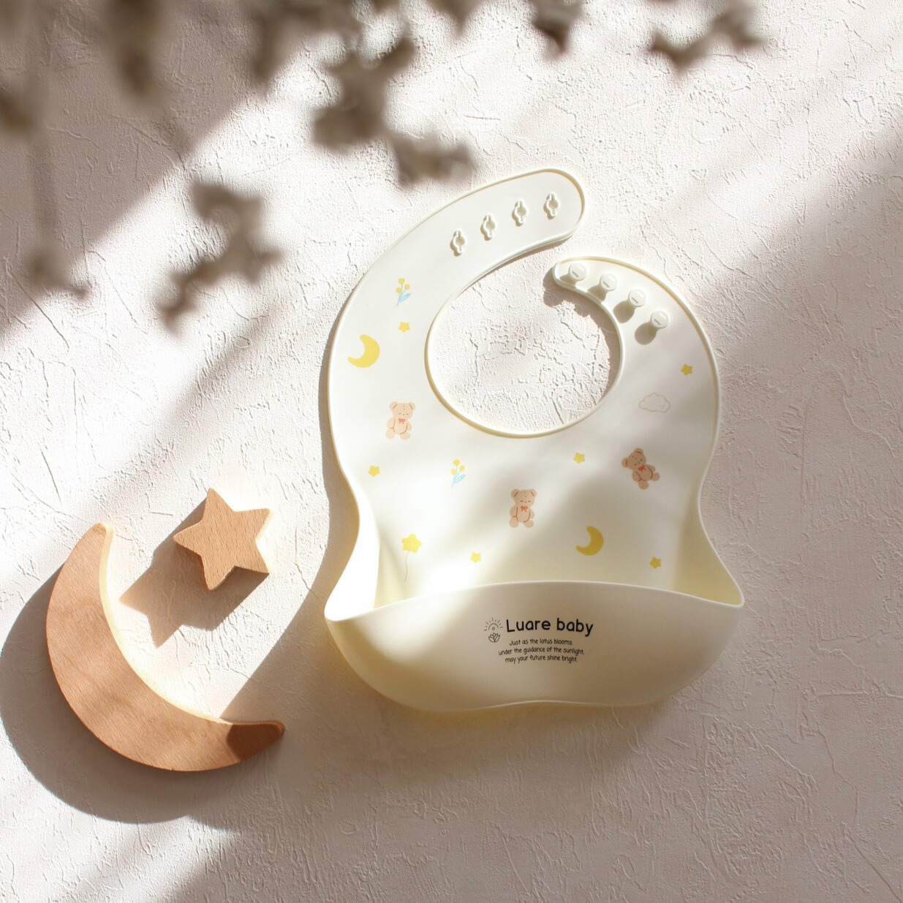
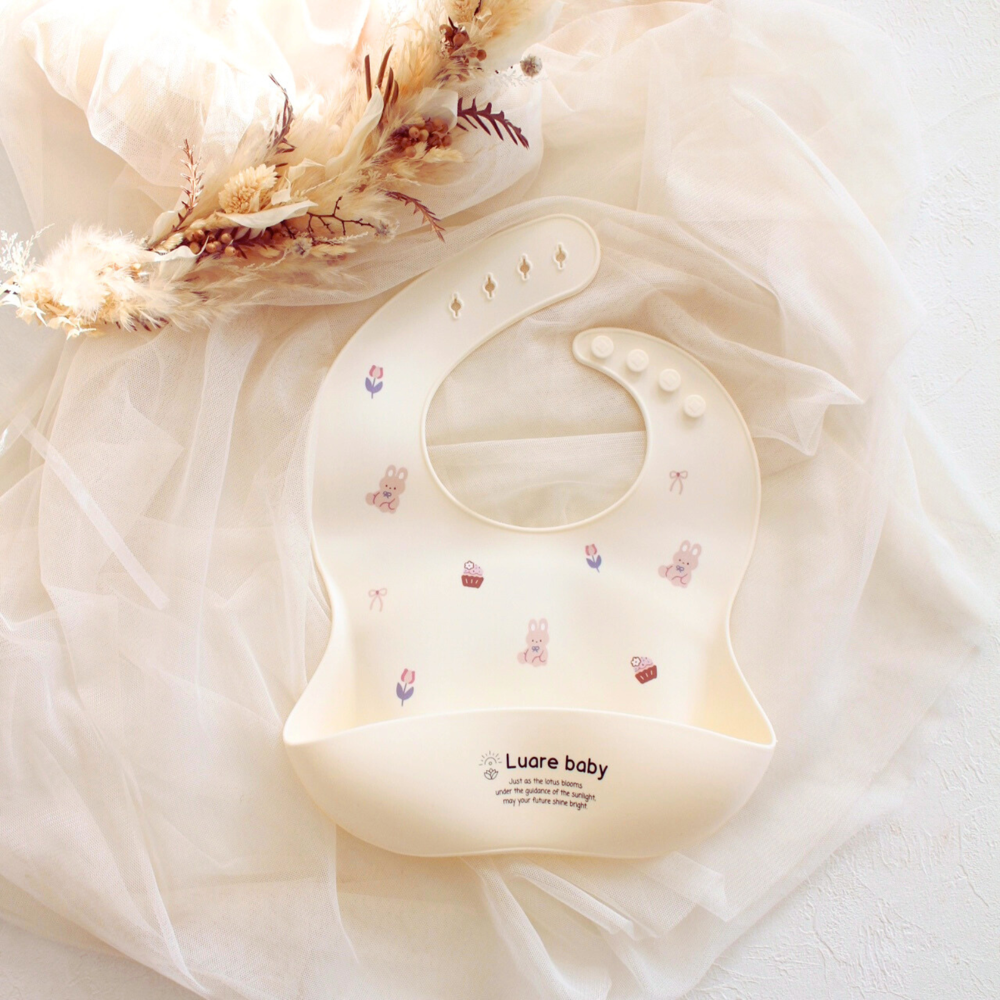
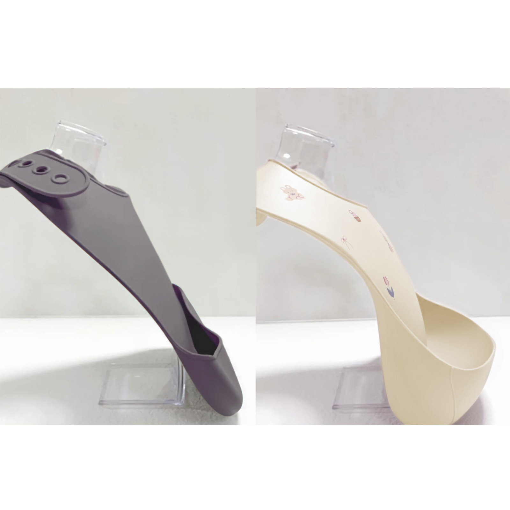
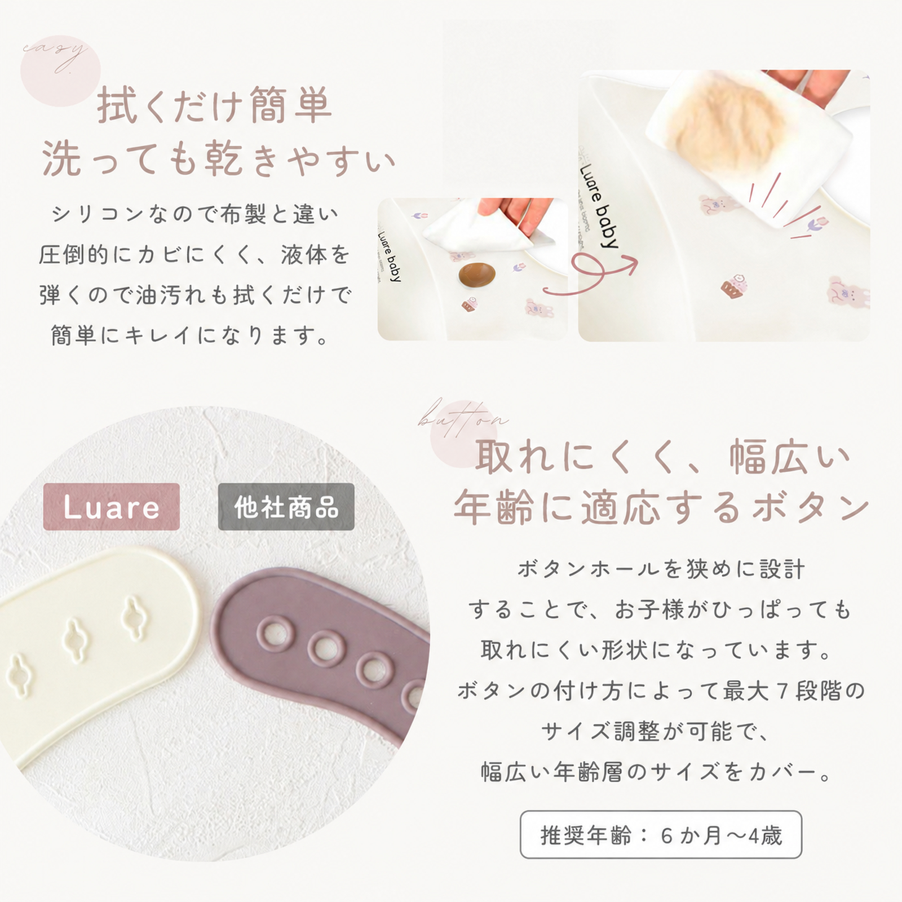
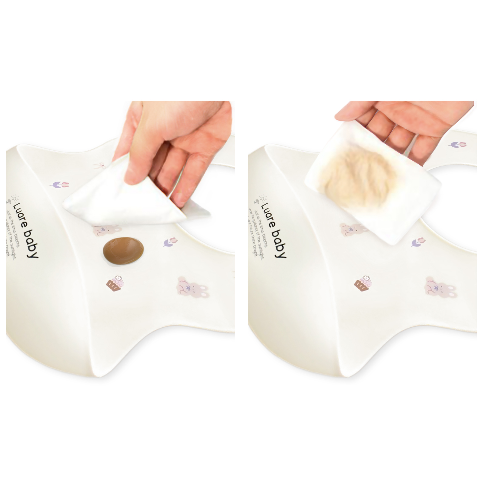
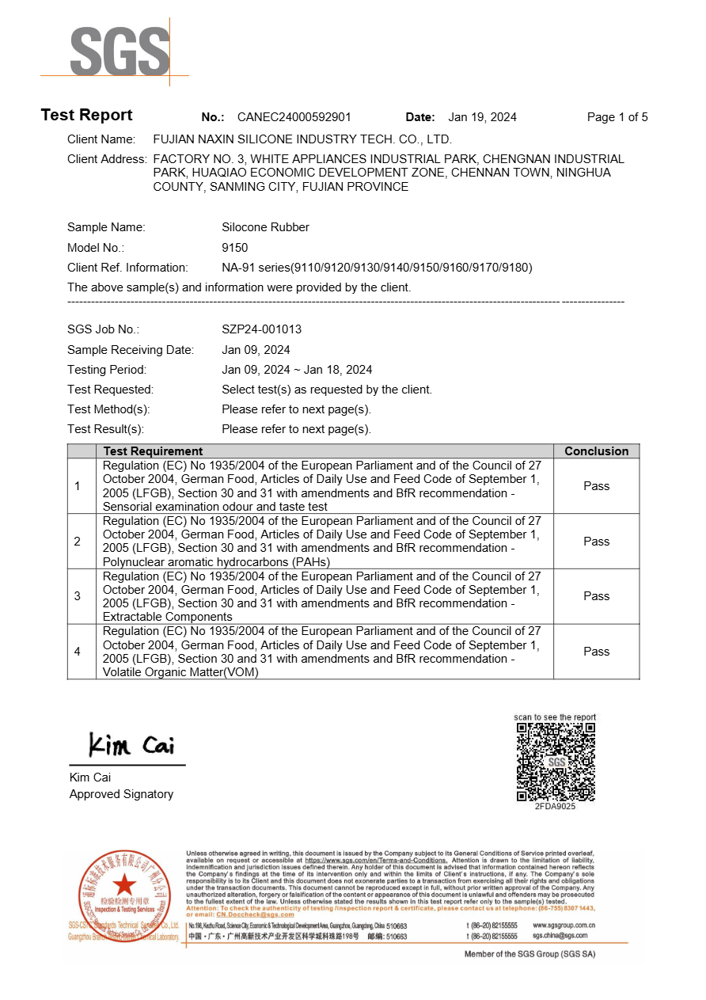
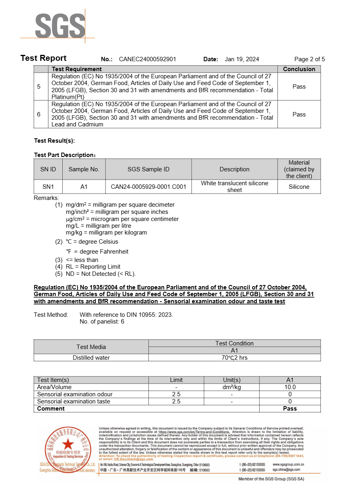
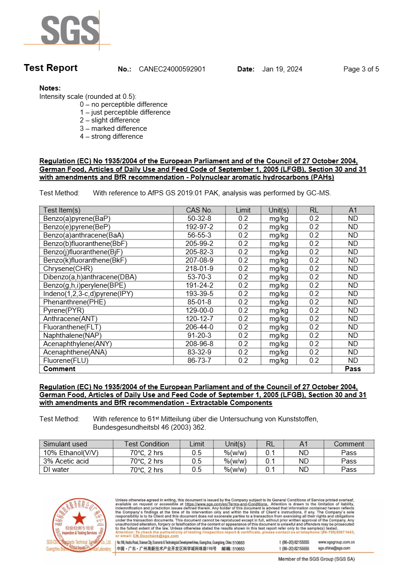
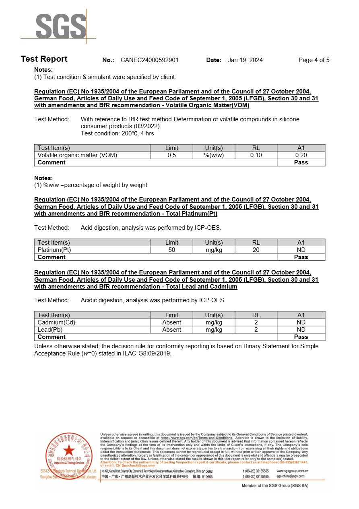

食べこぼしをキャッチしやすい、立体ポケット
Luare babyのシリコンビブは、立体構造によりポケットの形を保ちやすく、食べこぼしを受け止めやすい設計です。
薄すぎないしっかり感のある肉厚シリコーン素材を使用し、本体重量は約120g。軽すぎず食事中にも安定感のある心地よい装着感に仕上げています。
毎日の離乳食や食事時間に使いやすいお食事エプロンとして設計しています。

クマ柄

ウサギ柄
Luare babyのシリコンビブは、離乳食期の毎日に使いやすいお食事エプロンです。
やさしいアイボリーカラーと、クマ柄・ウサギ柄のオリジナルデザイン。
食べこぼしを受け止めやすい立体ポケットや、首まわりを調整できるボタン仕様など、毎日の使いやすさにもこだわりました。

Luare babyのシリコンビブは、立体構造によりポケットの形を保ちやすく、食べこぼしを受け止めやすい設計です。
薄すぎないしっかり感のある肉厚シリコーン素材を使用し、本体重量は約120g。軽すぎず食事中にも安定感のある心地よい装着感に仕上げています。
毎日の離乳食や食事時間に使いやすいお食事エプロンとして設計しています。

複数のボタンホールを設け、成長に合わせて首まわりを調整できます。
ボタンが外れにくい形状にもこだわり、毎日の食事時間に使いやすい設計です。
推奨年齢：6か月〜4歳

シリコーン素材なので、食事後の汚れもさっと拭き取りやすく、毎日のお手入れがしやすい仕様です。
水洗いはもちろん、食洗機（食器洗い乾燥機）にも対応しているため、忙しい家事の負担を軽減します。
アイボリーを基調にした落ち着いた色合いは、ナチュラルカラーやくすみカラーが好きな方にも取り入れやすいデザイン。
クマ柄とウサギ柄のLuare babyオリジナルデザインをご用意しています。
毎日の離乳食時間やお出かけ先での写真にも可愛らしく映える、洗練された雰囲気です。
本製品には、ドイツLFGB基準に適合したシリコーン原料を使用しています。
使用するシリコーン原料について、第三者検査機関SGS発行の、工場提供原料試験報告書に基づき確認しています。
※LFGBは、食品と接触する素材について、食品への成分移行や、におい・味への影響などを考慮するドイツの食品関連基準です。




SGS TEST REPORT
保有する原料試験報告書において、使用するシリコーン原料について、規定された試験範囲内で基準への適合を確認しています。
素材へのこだわり
赤ちゃんが毎日使うものだから、素材選びにもこだわっています。
本製品には、ドイツLFGB基準に適合したシリコーン原料を使用しています。
第三者機関による試験
第三者検査機関SGS発行の、工場提供原料試験報告書に基づき、使用しているシリコーン原料について安全性に関する試験結果を確認しています。
品質管理
お客様へお届けする前に、商品の状態を確認するための検品を行っています。
外観・傷・変形などを確認し、品質状態を確認したうえで出荷しています。
※本記載は製品に使用するシリコーン原料に関するものであり、完成品の第三者認証を示すものではありません。
首まわりを多段階で調節できるため、離乳食が始まる生後5〜6ヶ月頃から4歳頃まで長くご使用いただけます。
はい。離乳食初期の食事から、自分で食べ始める時期の食べこぼしまで、立体キャッチポケットがしっかり受け止めるため、離乳食エプロンやベビーエプロン、シリコンスタイとして最適です。
はい。お子様の成長に合わせて首まわりを細かく調整できるボタン穴仕様になっており、ひっぱられても外れにくい形状を採用しています。
シリコーン素材のため、水洗増や拭き取りでサッと汚れを落とせます。食洗機（食器洗い乾燥機）にも対応しているため毎日のお手入れも簡単です。
はい。やわらかなシリコーン素材ですので、くるっと丸めてコンパクトに持ち運びができ、お出かけや外食時にも重宝します。
やさしいアイボリーカラーを基調とした「クマ柄」と「ウサギ柄」の2種類のオリジナルデザインをご用意しております。
ドイツLFGB基準に適合した食品グレードのシリコーン原料を使用しています。